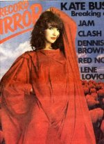

To the Reaching Out (Interviews) Table of Contents

To
the Reaching Out (Interviews) Table of Contents

(Cover
courtesy of Emmy May Lombaerts)
Date: Wed, 23 Nov 88 13:51 PST
From: Andrew Marvick (IED)
Subject: John Shearlaw's interview and tour preview, March 1979
John Shearlaw's interview and tour preview, March 1979
Wow Amazing
says Kate Bush; John Shearlaw agrees with her
Who said a word from the band was worth two from Kate Bush?
Because, just this once, it isn't true. But how else is one to penetrate the cloak of security? To delve into the mystery that surrounds Kate's upcoming (and now totally sold out) British Tour? To find out--or at least get an idea--of just how "amazing" (to use one of the lady's own favourite words) her first real "grand entrance" in front of the great British public is going to be?
That it will be a grand entrance is now virtually beyond question. For Kate, still only twenty years old, has found that what was at first a tentative (and very well planned) debut outing has swollen into a full-scale tour--now including five nights at the London Palladium, with Europe to follow.
While I've found (let's say a birdie told me!) that this spectacular initiation is likely to offer such treats as:
Two supporting dancers appearing with Kate (herself an accomplished dancer and mime artist);
What has loosely described as a "magician" (although, typically, the nature of the act is being kept a secret!).
A specially designed stage with opening mirrored ramps for Kate and the seven-piece band to disappear in and out of.
A variety of equipment--including a black carpet that will cover the entire stage area.
Mind-boggling set-pieces--one of which seems likely to be Kate suspended inside a giant, transparent egg (with only two handholds and two footholds) which will rotate as she sings.
As well as a completely new approach to the singer as the center of attention--perhaps one of the most interesting innovations! As well as using radio microphones (without leads), she'll also be wearing a wire head-piece (with a mike) for certain songs--thus making it easier to move, dance and sing...with no limitations.
Nor is all this dedication to presentation a mere attempt at technoflash. In fact, the whole production (which will travel with the tour and be adapted for each venue--with the full works being reserved for the largest stage: the London Palladium) isn't reckoned to be that expensive. (A figure of around 150,000 Pounds has been mentioned--almost peanuts in relation to full-scale ELO-like production packages).
Rather, if it works--and with all the effort that's gone into it, it looks like it will--it will be some way towards Kate's original stated ambition of "combining songs and dance in a slightly different way--a way that suits me."
Now you know, although you shouldn't! Prepare for something a little bit special--that's if Wuthering Heights didn't, or the incredible BBC TV video she recorded in Switzerland last month for Wow doesn't either.
Ms. Bush, whichever way you look at it, is about to break out in a big way. And not just out of an egg!
Yes, she has played live before--"in pubs and clubs, from when I was about fourteen," she remembers. "I was always happy to perform." And who can forget that it was Kate, as a squeaky and precocious sixteen-year-old, who first gained record company interest (and to certain people, also from record companies, who must now be kicking themselves with some force, abject scorn) by accompanying herself on piano at her doctor-father's house?
But, since the success of Wuthering Heights and her subsequent breakthrough as one of the most truly original voices of the decade (perfectly executed and illustrated on two albums) last year, there hasn't been what product-managers would call back-up. No live appearances; just videos in Japan and playbacks for Top of the Pops.
The reason being, yes..."a genuine lack of time."
"I think I survived all the digs I had last year," she says now. "I really wasn't deliberately keeping myself away from an audience to build up a reputation. It has simply taken all this time to stage things the way I want to. And to match up to the standard I've set myself.
"Which I haven't reached, and probably won't reach!" she laughs.
"But however it turns out, it's my concept--my concept, as much as the time, the budget and the presentation will allow.
"And it's for all the Lionhearts first!"
"It's also a concept, says Kate, that is the culmination of two years' planning, and--more realistically--six solid months of rehearsal, which began with the band long before Christmas, extended into lighting and effects work at a Home Counties film studio, and will culminate, for the rest of this month, with full run-throughs at a major London theatre.
"It does, however, make it somewhat understandable that the lady herself is reluctant to disclose any details of the surprises in store. Since Christmas she's lived with the hard-core reality of putting the show on--a development that has attracted so much rumour and speculation that someone less determined (and less in total control of her own projectction) might be tempted to begin her own publicity before the event. Not so.
To Kate, the shows--her live arrival--is firstly: "A present. A present that shouldn't be unwrapped until everyone is there!" And secondly, she also maintains: "It's like hearing about a film. Everybody tells you it's amazing--and you could end up disappointed. You shouldn't get people's expectations up like that." She smiles, half-childishly, half-apologetically.
<Shearlaw is apparently unaware that he--and he alone among all journalists prior to the tour's opening--has just done exactly what Kate would have appreciated he not do.>
"I know you want to know. But how can I start? If I tell you one thing, it'll give everything away. It'll bugger everything up!"
She smiles again, probably at the word this time. Underneath it, though, there's an iron resolve.
"If you look at it, it's my reputation," she says. "And yes, I hope it'll be something special, that's the way I'm working on it.
"It can't be original...It couldn't be, ever. Nothing could, because to an extent, it's all been done before. Just say they're my songs...and, hopefully, presented in a way that suits each song."
So, we have the tour, and the ever-expanding talents of one Kate Bush--strangely, somebody who is often criticised for her originality. Almost on the lines that: "If she's that original (especially that voice), it must be a gimmick. She'd better broaden out soon, before people get fed up with it."
And for the last six months she's been living a double life. On the one had Kate Bush, the lady in public demand: an award winner in so many polls early this year that even she's probably lost count of the number of times she's said "amazing" with reference to said distinctions.
On the other, a fiercely determined artist, working full-time on her big arrival. Her concept. And what could well be the full public flowering of one of our brightest new talents.
Great, fantastic and incredible. How else would she put it?
"I'm really looking forward to it so much," she says. "I look at myself, and I'm not a public person. At least I don't see myself as a public person; I don't go out and go to parties. My friends" --her boyfriends "are "just good friends", she points out--"don't make front-page news! All that amazing show-business thing, you know.
"But," she continues, "you do have different faces. My different face is when I perform--it will be when I perform, I mean!
"When I'm on stage, I get possessed, really." Her eyes--still bigger-than-believable, away from the flash-guns--sparkle. "Away from it, I'm just normal and small...then, suddenly, I've got this really special thing. I'm really letting go.
"It's an amazing feeling, a great big rush."
She pauses and delivers a sentence that could have a malicious tease about it. Equally, it could be genuine. "It's almost like seeing God, man! Though it's not quite as simple as that...
"You're communicating, without talking, something that's inside you--your creation--and it's going out to people. It's fantastic when you see them accepting it."
And does she feel they do, or sorry, that they will? Or does she worry about projecting a conscious image to gain that acceptance?
In a word, no. "It's not a question of being sexy or anything. It's much more to do with the interpretation of each song. Each one you see differently and present differently," she says. "I've been very open to lots of influences up until now, or I wouldn't even be doing the things I am doing. Like if I hadn't worked with Lindsay Kemp, I wouldn't be moving around at all while I was singing! Can you imagine that?
"So I've arrived at a stage when I'm ready to present myself as myself. Being sexy, or whatever, isn't deliberate at all.
"Anyway," she adds, defusing the topic, "it's not really right, is it? I mean, I don't look like a symbol first thing in the morning, do I?"
Ahem. On we go. She tells me that there are problems with the show, which is why the rehearsals have been so intense. It's a new band (which does include her brother Paddy, while another brother, John, is in charge of the show on the road--"they're an amazing family," says Kate); and, more particularly, she has had to adapt to the difficulties of presenting her voice--in all its uniqueness--while simultaneously interpreting the song through dance.
Kate's been almost religious in the last few months about this aspect of her training. She's been having lessons (with teacher Anthony Van Laast) for two hours each day, as well as other dancing routines, and she maintains: "It's the discipline that's all-important, and I can feel really bad if I have to miss it.
"It's just so important for my state of brain--I feel completely different, and so much better--afterwards. And it's something that I feel I can carry on developing. With dance and movement, you're learning and creating all the time."
While she's still--very much--keeping control of her career destiny, as well as--for the most part--her secrets, the only thing she's worried about is time. Time to get it right. She says: "I look back sometimes and realise how much time I did have to be receptive and open and take in so many things. To some exten I still am--and I'm still terribly subjective.
"It's not that it's really changed, but I find that there are definite restrictions on my time, and there are definite things that I want to control.
"It'll be an objective look at me, going out on tour. It's really my reputation and my career, and everything I've been working for.
"I'm not closing off, and I still need help, but it's up to me to see that I can reach the standards I've set myself. "But just to get that audience contact, for the first time, will be fantastic!"
What else, indeed? The unveiling begins next month and--secrets or no secrets--it will be worth it.
What was that about " Wow is the word"?

To
the Reaching Out (Interviews) Table of Contents
"The pull and the push of it all..." - Kate Bush
Reaching Out
is a
Marvick - Hill
Willker -
Mapes
Fitzgerald-Morris
Grepel - Love-Hounds
Presentation
{kind=link}